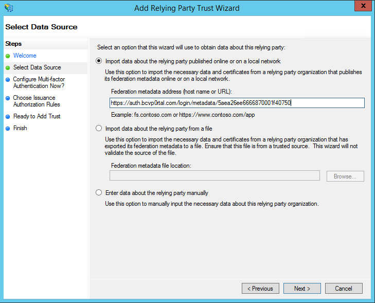

Configuring Single Sign-On with Active Directory Federation Services
In this topic you will learn how to configure Gallery to support single sign-on using Active Directory Federation Services (ADFS).
Before you get started
Complete these initial setup steps:
Enable RelayState for iDP-initiated sign on by following the instructions here. The location varies depending on the version of ADFS that is being using.
Restart the ADFS service so the changes are applied.
Adding a Gallery Access Control Profile
Open Administrative Tools from the Windows Start menu or Control Panel and then open the AD FS Management application.
Open Services > Certificates in the left hand explorer panel.
Double-click on the Token-signing certificate that you want to use.
Click on the Details tab and click Copy to File…
Click Next in the export wizard, then select the Base-64 encoded X.509 (.CER) option.
Save the certificate file to your local file system and then open it in a text editor. This is the certificate that will be used to setup the Gallery access control profile.
Open the Gallery module.
Click Settings.
Click Access Control Profiles in the left navigation.
Click Create Profile.
Give it a Name and then select SSO - Requires a username and password for access.
In the SAML 2.0 Endpoint (HTTP) field, enter the URL to the iDP-initiated sign-on page for your ADFS server. This usually ends in IdpInitiatedSignOn.aspx. For example, if the SP-initiated sign-on link is https://sso-test.brightcove.com/adfs/ls, the iDP-initiated sign-on page is https://sso-test.brightcove.com/adfs/ls/IdpInitiatedSignOn.aspx.
Check the My SSO System is ADFS (Active Directory Federation Services) option.
Copy and paste the certificate that you saved in step 6 into the X.509 Certificate field.
Click Save to save the access control profile. The new access control profile should appear in the list of profiles.
Back in the AD FS Management application, open Relying Party Trusts.
Click Add Relying Party Trust… in the right hand panel.
Click Start in the wizard and then paste the Metadata URL that was displayed in step 15 into the Federation metadata address field.

Click Next and then give your relying party trust a name.
Continue clicking Next until the Finish step. Uncheck the Configure claims issuance policy for this application checkbox. Click Close.
You should now be able to associate a Portal Experience to the access control profile that was created. After the experience is published, navigating to it should go through the ADFS sign-on workflow.